FOUR LENSES, ONE READ
One Integrated 4iC Diagnostic

MARKET
Know WHAT to do, and where.
Landscape, regulation, buyers, and channels.
OPERATIONAL
Know HOW it gets done.
Cost structures, bottlenecks, process architecture and readiness to scale or expand.
CAPACITY & CAPABILITY
Ensure it CONTINUES.
People, governance, and whether gains persist.
DIGITAL
Accelerate HOW it is done.
Connected systems, reliable data and fit-for-purpose automation that enable execution.